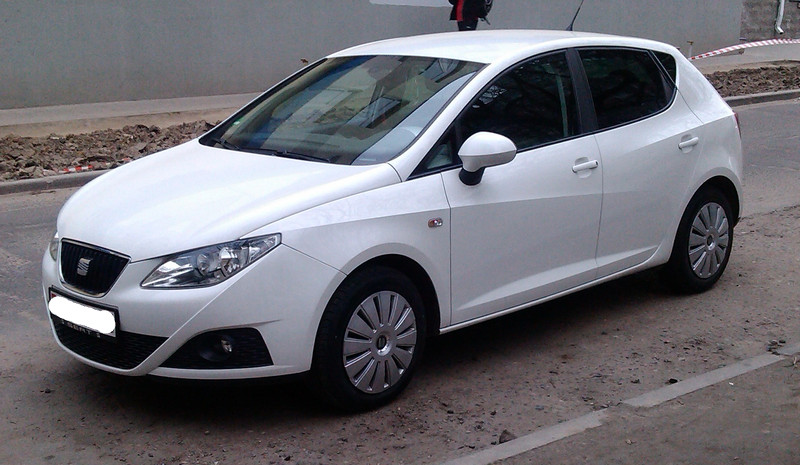
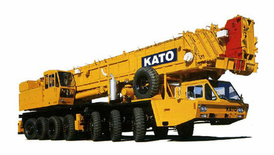
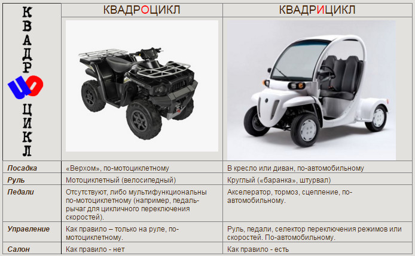
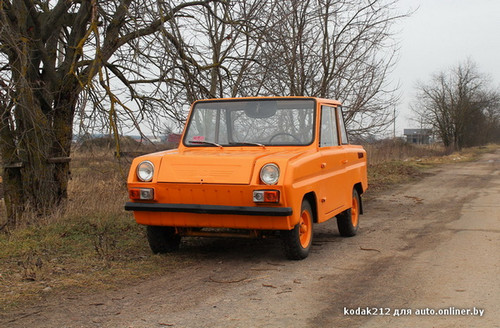
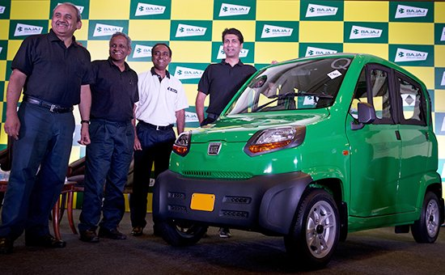

автомобиль — механическое транспортное средство,
имеющее не менее четырех колес, расположенных не менее чем на двух осях,
за исключением колесных тракторов и самоходных машин.
К автомобилям приравниваются квадрициклы (мотоколяски) —
четырехколесные механические транспортные средства, имеющие приводы управления автомобильного типа
и массу в снаряженном состоянии не более 550 килограммов;

Автомобиль SEAT Ibiza. Фото автора.
Конечно, уже с детского сада мы знаем, что такое автомобиль.
Однако сможете ли вы с первого взгляда сказать, что изображено на рисунке внизу:
автомобиль или самоходная машина?

Фото с сайта lifters-loaders.ru.
Во-первых из данного пункта правил следует, что водитель автомобиля не имеет автоматического права управления тракторами (для этого требуется удостоверение тракториста-машиниста) и самоходными машинами.
Во вторых, данный пункт приравнивает к мотоциклам квадрИциклы.
Сразу возникает вопрос: чем квадрИцикл отличается от квадрОцикла?

Скриншот с сайта motoiya.ru
Т.е. квадрИцикл - это автомобиль (с двигателем мотоциклетного цикла),
а квадрОцикл - это самоходная машина.
Двигатель мотоциклетного типа - это как на мотоцикле, двухтактный, куда заливаешь бензин с добавлением масла.
Вот еще примеры квадрИциклов(мотоколясок) - такие небольшие автомобильчики:

Мотоколяска СМЗ "инвалидка". Фото с сайта auto.onliner.by

Мотоколяска Qute. Фото с сайта rbc.ru.